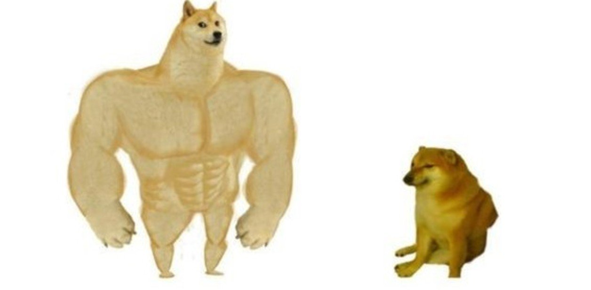
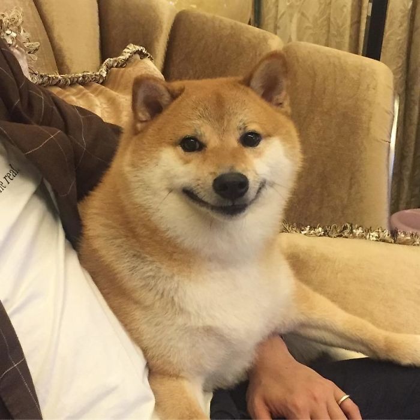
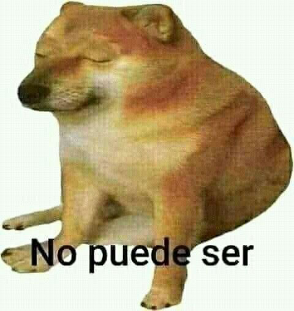
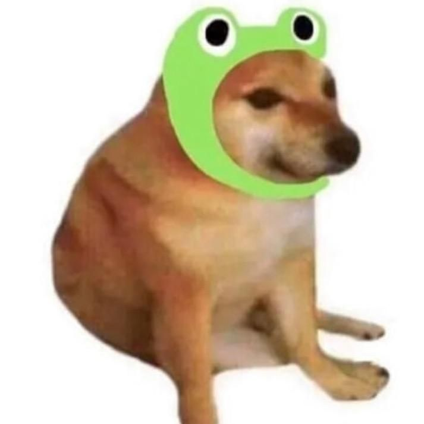
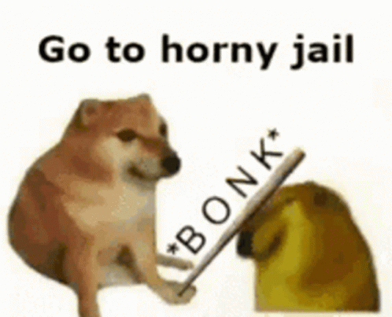

Página de homenaje hacia los memes de los perritos Cheems hecha con HTML y CSS.


Fotografía del perrito Cheems en la vida real.

Meme del perrito Cheems triste.

Meme del perrito Cheems con una gorrita de sapo.

Meme del perrito Cheems enviando a la horny jail a otro perrito Cheems.
"Bonk!"
-Perrito Cheems
Regístrate para recibir los mejores momazos del perrito Cheems.